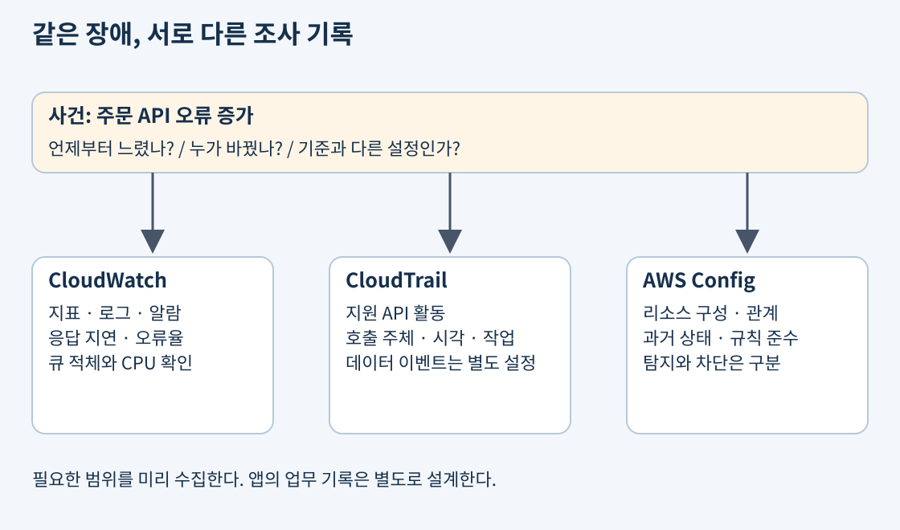
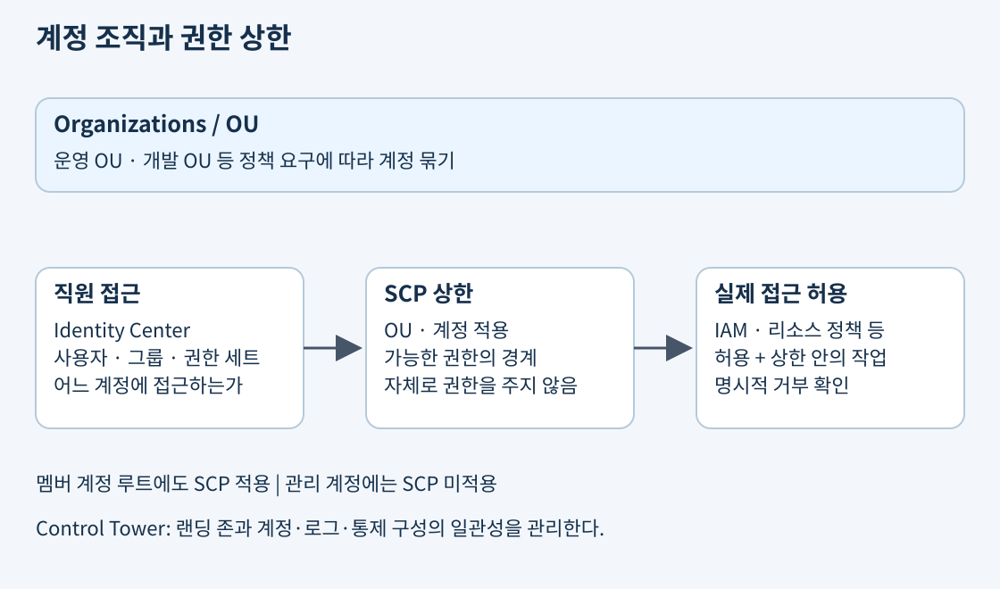
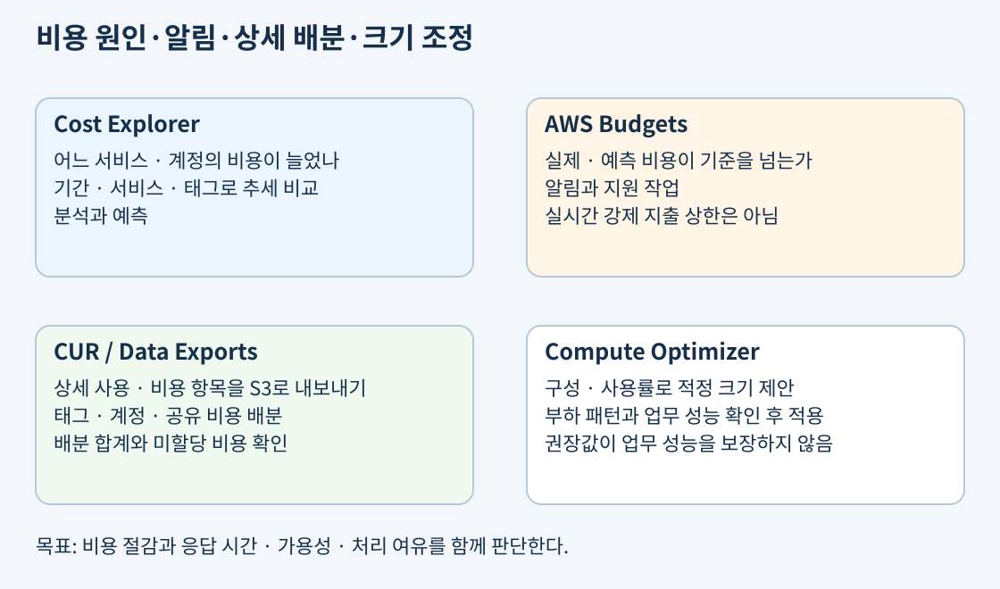
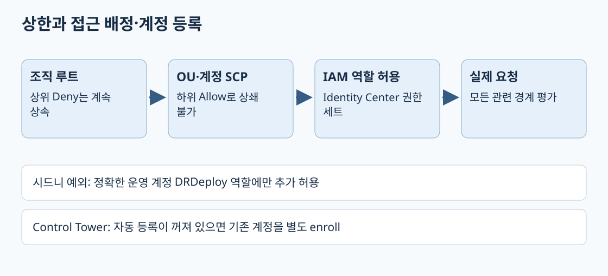
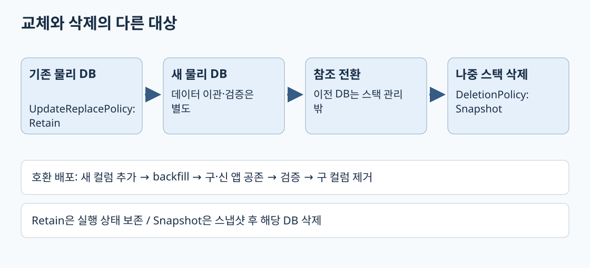

주문 API 오류율이 올라갔다고 하자. 운영자는 어느 시점부터 느려졌는지, 누가 설정을 바꿨는지, 현재 설정이 회사 기준을 어기는지 확인해야 한다. 이 질문들은 각각 성능 관측, 작업 감사, 구성 평가에 해당한다. 하나의 로그 화면에서 모든 답을 자동으로 얻는다고 생각하면 필요한 기록을 미리 켜두지 못한다.

| 서비스 | 주된 기록·판단 | 사례 |
|---|---|---|
| CloudWatch | 지표·로그·알람과 운영 상태 | 오류율·응답 지연·큐 적체 증가 |
| CloudTrail | 계정에서 수행된 지원 API 활동 | 누가 보안 그룹 규칙을 바꿨는가 |
| AWS Config | 리소스 구성 이력·관계와 규칙 준수 | 과거·현재 보안 그룹이 기준에 맞는가 |
출처: CloudWatch, CloudTrail, AWS Config
지표(metric)는 시간에 따른 숫자다. CPU 사용률, 요청 수, 오류 수처럼 집계해서 추세를 본다. 로그(log)는 개별 실행의 메시지와 사건 기록이다. 오류가 난 주문 번호와 예외 내용을 찾을 때 사용한다. 알람(alarm)은 지표가 정한 조건을 만족하는지 평가해 알림이나 지원되는 작업을 실행한다.
평균 응답 시간이 정상이더라도 일부 고객만 매우 느릴 수 있다. 평균과 함께 상위 백분위 지연, 오류율, 처리 성공률을 본다. 알람의 기간·평가 횟수·누락 데이터 처리 방식이 잘못되면 일시적인 변동에 과민하거나 실제 장애를 놓칠 수 있다. 장애 알림은 담당자와 대응 절차까지 연결해야 유용하다.
EC2 기본 지표에 앱의 모든 상태가 자동 포함되는 것은 아니다. OS 메모리나 파일 시스템 등 필요한 항목은 CloudWatch agent 같은 수집 구성이 필요할 수 있다. 앱 로그도 로그 그룹·스트림으로 전달하도록 설정한다. 로그에 비밀번호·토큰·개인정보를 남기지 않고 보관 기간을 정한다. 수집량·저장·쿼리 비용은 운영 규모와 함께 증가한다.
출처: CloudWatch 지표, 알람, CloudWatch agent 수집 항목
X-Ray는 한 요청이 API·함수·DB·외부 서비스로 이동한 경로와 각 구간의 시간을 추적한다. 전체 응답이 3초라면 함수 계산이 느린지 DB 호출에 2.5초가 걸렸는지 구분하는 데 유용하다. 앱과 통합 서비스가 추적 데이터를 보내도록 계측해야 하며 샘플링도 고려한다. 모든 요청의 전체 내용을 무조건 저장하는 감사 장부와는 다르다.
Amazon Managed Service for Prometheus는 Prometheus 호환 지표 수집·저장·조회에 적합하다. 기존 Kubernetes 지표와 PromQL을 활용할 때 검토한다. Amazon Managed Grafana는 CloudWatch·Prometheus·X-Ray 등 여러 데이터 소스의 지표·로그·추적을 시각화한다. Grafana 화면을 만든다고 각 데이터 소스의 수집과 보관이 저절로 구성되지는 않는다.
출처: X-Ray, Managed Service for Prometheus, Managed Grafana
CloudTrail은 사용자·역할·AWS 서비스가 수행한 지원 활동을 기록한다. 보안 그룹 변경 사건에서 호출 주체, 시각, API와 요청 정보를 추적하는 데 쓴다. 애플리케이션의 업무 로그와는 다르다. 주문 취소 사유는 회사 앱에 기록해야 하며 AWS API 감사만으로 알 수 없다.
관리 이벤트와 데이터 이벤트를 구분한다. 버킷 정책 변경은 관리 작업이고 객체 읽기·쓰기 같은 동작은 데이터 작업이다. CloudTrail의 이벤트 기록이 보인다고 모든 S3 객체 읽기까지 자동 기록되는 것은 아니다. Trail과 event data store는 데이터 이벤트를 기본적으로 기록하지 않으므로 필요한 리소스·이벤트를 명시적으로 활성화하고 비용을 확인한다. 장기 보관·다중 계정 감사는 수집 범위와 저장소 보호도 설계한다.
Config는 지원 리소스의 구성과 관계를 기록하고 규칙으로 준수 여부를 평가한다. “이 보안 그룹에 외부 전체를 허용하는 규칙이 있었는가”는 Config 이력으로, “누가 추가했는가”는 CloudTrail로 연결해 본다. Config의 비준수 판정이 곧 요청을 차단한다는 뜻은 아니다. 사전 방지 통제와 탐지·수정 자동화는 구분하고 수정 권한과 승인 조건을 별도로 정한다.
출처: CloudTrail 관리 이벤트, 데이터 이벤트의 활성화·비용, Config 동작과 구성 기록
AWS Organizations는 여러 AWS 계정을 조직으로 묶어 관리한다. 개발·운영·로그 보관을 계정 단위로 나누면 권한과 비용, 장애 영향 범위를 분리하기 쉽다. OU는 비슷한 정책이 필요한 계정들을 묶는 조직 단위다. 회사 조직도를 그대로 복사하기보다 운영 규칙이 비슷한 계정들을 묶을 수 있다.
통합 결제(consolidated billing)는 여러 계정의 청구를 모아 보는 기능이다. 계정의 리소스나 IAM 사용자가 하나로 합쳐지는 것은 아니다. 계정 간 접근은 역할·리소스 정책 등 별도 허용이 필요하다. 통합 결제만 사용하는 조직과 SCP를 사용하는 전체 기능 조직도 구분한다.

SCP는 조직·OU·계정 수준에서 사용할 수 있는 권한의 최대 범위를 정한다. SCP에서 S3를 허용해도 IAM 역할에 S3 권한이 새로 생기지 않는다. 반대로 IAM에서 허용해도 적용되는 SCP가 명시적으로 거부하면 사용할 수 없다. 루트에서 OU와 계정으로 이어지는 정책 계층도 평가에 영향을 준다.
멤버 계정의 루트 사용자도 SCP의 영향을 받는다. 그러나 관리 계정의 사용자·역할에는 SCP가 적용되지 않으며 서비스 연결 역할 같은 예외도 있다. 따라서 관리 계정에 일반 업무를 몰고 SCP로 막으려는 설계는 맞지 않는다. 정책 변경 전 별도 시험 계정·OU에서 영향을 확인해야 운영 복구 권한까지 차단하는 일을 줄일 수 있다.
출처: Organizations 개요, SCP 권한 범위와 예외, SCP 상속
Control Tower는 여러 AWS 서비스를 조합해 계정·로그·보안 통제를 갖춘 랜딩 존을 구성하고 운영한다. 조직을 새로 만들거나 계정이 늘어날 때 기준 환경과 통제를 일관되게 적용하는 데 적합하다. 모든 앱을 자동으로 규정 준수 상태로 만드는 도구는 아니며 지원 통제의 예방·탐지 방식과 적용 범위를 확인한다.
IAM Identity Center는 직원이 여러 계정과 업무 앱에 접근할 경로를 관리한다. 사용자·그룹에 권한 세트를 배정하고 외부 신원 공급자와 연동할 수 있다. Organizations가 계정들을 묶고 SCP가 상한을 정한다면, Identity Center는 직원에게 실제 접근 경로를 배정하는 역할이다.
출처: Control Tower, IAM Identity Center
CloudFormation은 템플릿으로 AWS 리소스를 선언하고 스택 단위로 생성·변경한다. 수동으로 버튼을 눌러 만든 환경은 무엇을 바꿨는지 재현하기 어렵다. Infrastructure as Code(IaC)로 환경을 정의하면 버전 관리와 검토를 거쳐 같은 구조를 반복 배포하기 쉽다. 템플릿은 리소스를 관리하는 코드이므로 실행 역할 권한과 민감값 처리도 중요하다.
리소스 속성 변경에는 제자리 수정과 교체가 있다. 교체가 필요한 DB나 저장소 변경을 “코드 한 줄 수정”이라고 가볍게 취급하면 데이터 손실과 중단을 일으킬 수 있다. Change set으로 예정된 변경을 검토하고 데이터 리소스에는 백업과 보존 정책을 설계한다. 불변 인프라는 기존 서버를 계속 수작업 수정하기보다 새 버전 리소스를 만들어 교체하는 접근이다. 모든 CloudFormation 업데이트가 자동으로 불변 교체되는 것은 아니다.
출처: CloudFormation 스택, 업데이트 방식, Change set
드리프트(drift)는 실제 리소스 구성이 템플릿의 예상 상태와 달라진 것이다. 긴급히 콘솔에서 보안 그룹을 수정한 뒤 코드에 반영하지 않으면 다음 배포 때 충돌할 수 있다. Drift detection은 지원 리소스·명시된 속성 등 탐지 범위가 있으므로 “모든 실제 차이를 찾는다”는 뜻은 아니다. 차이를 발견한 뒤 템플릿에 반영할지 실제 환경을 되돌릴지 결정해야 한다.
업데이트 실패 시 롤백으로 이전 상태 복구를 시도할 수 있지만 모든 데이터와 외부 부작용을 원상 복구하는 만능 기능은 아니다. 롤백 자체가 실패할 수도 있다. 배포 전 복구 가능성, DB 스키마의 호환성, 백업과 필요한 권한을 확인한다.
출처: 드리프트 탐지의 범위, 롤백 실패 복구
Systems Manager는 관리 대상 노드의 인벤토리·패치·명령 실행·접속 등 운영 작업을 지원한다. Fleet Manager는 관리 노드를 확인하고 운영하는 화면을 제공하며, Patch Manager는 패치 기준과 일정에 따라 적용 상태를 관리한다. Run Command는 지원 노드에 명령을 실행하고 Automation은 여러 운영 단계를 런북으로 묶는다.
Session Manager는 IAM으로 통제한 세션 접속을 제공해 직접 SSH 인바운드 포트를 열거나 개별 SSH 키를 배포하는 부담을 줄일 수 있다. 그러나 IAM 허용만 있으면 모든 서버에 연결되는 것은 아니다. 지원 OS·SSM Agent·노드 역할과 서비스 엔드포인트로의 네트워크 연결 등 전제 조건이 필요하다. 사용자 세션 권한과 인스턴스가 서비스에 통신하는 역할 권한도 구분한다.
관리형이라고 패치 적용 직후 앱 정상 동작까지 보장하지 않는다. 유지보수 시간, 대상 태그·그룹, 순차 배포와 실패 기준을 정한다. 명령·런북 실행 권한은 서버 내부에서 큰 권한을 만들 수 있으므로 대상과 문서 범위를 제한하고 실행 기록을 보관한다.
출처: Systems Manager 기능, Session Manager 전제 조건, Patch Manager

| 도구 | 주된 용도 | 예와 주의점 |
|---|---|---|
| Cost Explorer | 비용·사용 추세 분석 | 지난달보다 늘어난 서비스·계정·태그 찾기 |
| AWS Budgets | 실제·예상 비용과 사용량 기준 알림·지원 작업 | 예산 초과 알림; 실시간 강제 결제 상한과 다름 |
| CUR / Data Exports | 상세 사용·비용 데이터를 내보내 분석 | 청구 항목을 S3에서 자체 분석·배분 |
| Compute Optimizer | 사용 지표에 근거한 적정 크기 제안 | 인스턴스 축소 후보 확인; 업무 성능 검증 필요 |
Cost Explorer는 비용이 어느 서비스·계정에서 늘었는지 좁히는 데 적합하다. 사용률이 낮은 약정이나 비용 추세를 분석하되 월말 최종 청구서와 시점·지표가 다를 수 있다. Budgets는 실제 지출이나 예측값이 기준에 이르면 알려주고 설정에 따라 지원 작업을 실행한다. 데이터 반영과 알림에 지연이 있고 기존 리소스 비용도 계속될 수 있어 예산을 정했다고 비용이 그 금액에서 정확히 멈추지는 않는다.
CUR는 제품·사용 유형·작업 등의 상세 항목을 분석하는 데 쓴다. 데이터 내보내기 방식과 필드를 확인하고 Athena 같은 도구로 계정별·서비스별 배분을 계산할 수 있다. Compute Optimizer는 관측된 사용률을 바탕으로 조정 후보를 제안한다. 관측 기간에 없던 월말 폭증이나 사업 성장까지 보장하지 않으므로 앱 지연·용량 여유와 함께 판단한다.
출처: Cost Explorer, Budgets, CUR, Compute Optimizer
Environment=prod, Team=orders 같은 태그는 비용을 업무 단위로 나누는 데 도움이 된다. 비용 할당 태그는 필요한 활성화와 데이터 반영 조건을 확인한다. 누락 태그, 지원되지 않는 항목, 데이터 전송·공용 네트워크 비용처럼 직접 귀속이 어려운 비용은 별도 배분 규칙이 필요하다.
여러 팀의 컨테이너가 같은 컴퓨팅 자원을 쓰면 인스턴스 비용만으로 팀별 사용량을 알기 어렵다. 지원 컨테이너에 대한 split cost allocation data는 CPU·메모리 사용 등에 근거해 공유 컴퓨팅 비용을 세분화하는 데 도움을 준다. 어떤 방식이든 배분 기준과 미할당 비용을 공개해야 팀별 합계가 전체 비용과 어긋나지 않는다. 태그 배분은 회계적 분석이며 서비스 접근 권한을 자동으로 분리하지 않는다.
출처: 비용 할당 태그, Split cost allocation data
Service Quotas는 계정·리전 등의 서비스 한도를 확인하고 조정 가능한 한도의 증가를 요청하는 데 쓴다. 요청이 승인될지와 걸리는 시간을 보장하지 않으므로 대규모 행사 직전에만 확인하면 늦을 수 있다. API 스로틀링은 잠깐의 재시도로 회복될 수 있지만 동시 실행·DB 연결 수처럼 지속적인 병목은 부하 제어와 용량 조정이 필요하다.
복구는 한도 증가만으로 끝내지 않는다. 재시도에는 백오프와 지터를 적용하고, 큐로 완충하며, 복구 후 한꺼번에 몰리는 재처리도 제한한다. 평소 사용률과 한도 근접도를 알리고 실제 throttling·오류 지표를 같이 본다. 리소스 하나의 CPU가 정상이라고 업무가 정상인 것은 아니다. “주문 접수의 일정 비율이 정해진 시간 안에 성공” 같은 서비스 수준 목표(SLO)를 정하면 사용자 영향을 중심으로 운영할 수 있다.
AWS Health Dashboard는 AWS 서비스 사건과 계정별 관련 변경·예정 작업을 확인하는 데 쓰인다. 앱의 업무 오류 로그를 대신하지 않으므로 CloudWatch와 함께 본다. 외부 서비스 장애인지 앱 배포 문제인지 판단할 증거를 여러 출처에서 모은다.
출처: Service Quotas, 재시도·백오프·지터, AWS Health
License Manager는 조직의 소프트웨어 라이선스 사용을 추적하고 규칙으로 사용량을 통제할 때 활용한다. BYOL을 적용할 때 도구에 등록했다고 모든 공급업체 계약이 자동 허용되는 것은 아니다. 코어·소켓·가상화·전용 호스트 조건 같은 실제 계약도 확인해야 한다.
Service Catalog는 관리자가 승인한 인프라 제품을 포트폴리오로 제공하고 사용자가 정해진 제약 안에서 배포하도록 한다. 팀마다 보안·태그가 다른 서버를 수동 생성하는 일을 줄일 수 있다. 제품을 출시할 역할과 허용 구성을 관리하는 것이 핵심이며 모든 사용자의 임의 리소스 생성을 별도 통제 없이 막아주는 것은 아니다.
출처: License Manager, Service Catalog 제품·제약·역할
AWS Proton은 플랫폼 팀의 버전 있는 템플릿으로 서버리스·컨테이너 인프라와 배포를 표준화하던 서비스다. 공식 지원은 2026-10-07 종료되었으므로 현재 신규 구축 선택지로 권하지 않는다. 이미 배포한 CloudFormation 스택과 인프라는 유지되지만 Proton 관리 경로는 종료된다는 차이를 구분한다. 시험 범위 문서의 이름과 현재 서비스 가용성은 따로 확인하며 관련 범위는 서비스 참고에서도 비교한다.
Well-Architected Tool은 워크로드를 운영 우수성·보안·안정성·성능 효율성·비용 최적화·지속 가능성 관점에서 검토하고 위험과 개선 계획을 기록한다. 설계 질문에 답하는 과정이지 실제 시스템이 안전하다는 인증서를 자동 발급하는 기능은 아니다. 장애 복구·권한·비용처럼 서로 충돌하는 요구의 선택 이유를 기록하고 개선 후 다시 평가한다.
출처: Well-Architected Tool, Well-Architected Framework
개발자가 운영 보안 그룹을 바꾸려는 경로를 그려본다. Identity Center의 접근 배정, IAM 허용과 SCP 상한, CloudFormation 변경 검토, CloudTrail 감사와 Config 이력이 어디에 놓이는지 설명한다. 이어 API 지연 알람이 발생했을 때 지표·로그·추적으로 원인을 좁히고 Health와 할당량을 확인하는 순서를 연결한다. 비용이 늘었다면 어느 도구로 원인을 찾고 어느 도구로 다음 초과를 알릴지 덧붙인다.
서비스 수준 지표(SLI)는 관측한 사용자 성공률·지연 같은 측정치이고 SLO는 그 목표다. “주문 99.9%가 2초 안에 성공”이면 CPU 평균만 보지 않고 성공 주문 수/전체 유효 요청 수와 지연 분포를 측정한다. CloudWatch 지표·알람은 변화와 위반을 알리고 로그는 오류 내용을, X-Ray trace는 계측된 특정 요청의 API→함수→DB 소요 시간을 연결한다. 샘플링된 trace가 없다고 요청이 없었다는 뜻은 아니다.
보안 그룹이 열렸다면 CloudTrail에서 변경 API의 주체·세션·시간을 찾고 Config에서 변경 전후 구성을 본다. S3 객체 GetObject는 데이터 이벤트이므로 해당 버킷의 로깅 선택이 필요하며 관리 이벤트 이력만으로 객체 접근자를 찾을 수 없다. 로그 저장 계정·보존·버킷 정책·KMS·삭제 보호도 함께 설계한다. IAM Access Analyzer의 CloudTrail 기반 정책 생성은 관측된 사용의 초안이다. 드문 복구 작업이 관측 기간에 없었다고 삭제하지 말고 별도 검토한다.
출처: CloudWatch SLO, 데이터 이벤트, 정책 생성.
SCP는 권한을 부여하지 않는 상한이다. 적용 계층 어디든 명시적 Deny가 있으면 하위 OU Allow나 계정 AdministratorAccess로 우회할 수 없다. 허용 목록 방식이면 루트→OU→계정 각 수준에서 허용이 이어져야 한다. Permissions boundary는 특정 IAM 주체의 상한이고 계정 관리자가 그 경계를 수정할 수 있다면 조직 SCP와 같은 우회 방지 수단은 아니다. 태그를 이용한 ABAC는 PrincipalTag와 ResourceTag를 비교하되 사용자의 임의 태그 변경·역할 세션 태그 조작도 제한해야 한다. 비용 할당 태그 활성화가 인가 정책을 만들지는 않는다.
서울만 허용하던 조직에서 운영 계정의 DRDeploy 역할에만 시드니 EC2를 허용하려면 상위 Deny 자체에서 정확한 계정·역할 ARN과 리전의 조합만 빠지게 한다. 역할만 전체 리전 예외로 빼거나 시드니를 모든 주체에게 허용하면 범위가 넓어진다. 서로 다른 조건 키는 AND, 조건의 여러 허용 값은 보통 OR이지만 부정 연산자의 여러 값은 NOR로 평가하므로 정책을 문장대로 시험한다. 심화의 두 Deny 예가 허용 조합과 거부 조합을 분리한다.
Identity Center에서는 외부 IdP 사용자·그룹을 계정별 permission set에 배정하면 해당 계정 역할로 세션 접근한다. 권한 세트가 앱 고객의 JWT를 발급하는 것은 아니다. Control Tower의 기존 계정 편입은 지원 전제 조건·AWSControlTowerExecution 역할·기존 Config 충돌 등을 확인하고 등록된 OU로 enroll해 baseline과 통제를 적용한다. 자동 등록이 꺼져 있으면 OU 이동만으로 편입이 완료되지 않는다. 기존 VPC·애플리케이션을 자동 재설계하는 과정도 아니다.

출처: SCP 평가, 조건 논리, Control Tower 기존 계정 등록, 권한 세트.
CloudFormation 논리 ID는 템플릿의 이름이고 물리 ID는 실제 리소스다. Replacement이면 새 물리 리소스를 만들고 참조를 전환한다. UpdateReplacePolicy는 이때 빠지는 이전 물리 리소스를, DeletionPolicy는 스택 삭제·템플릿에서 제거되는 관리 중 리소스를 다룬다. 이전 DB를 실행 상태로 남기려면 UpdateReplacePolicy: Retain이며 Snapshot은 스냅샷 후 이전 DB를 삭제한다. 스택 삭제 시 현재 DB만 스냅샷 후 삭제하려면 DeletionPolicy: Snapshot을 별도로 둔다. Snapshot은 지원 리소스에만 유효하며 S3에 붙여 DB식 스냅샷을 기대하지 않는다. Retain된 이전 DB는 스택 관리 밖에서 비용·권한·정리 책임이 계속된다.
예를 들어 주문 DB 컬럼 이름을 바꿀 때 새 컬럼 추가→기존 데이터 backfill→구·신 앱 모두 호환되는 읽기/쓰기→전환 검증→구 앱 종료 후 구 컬럼 제거 순으로 expand-contract한다. IaC rollback은 삭제한 업무 데이터나 외부 결제를 복구하지 않는다. 백업·복구 테스트와 이관 검증을 별도로 갖춘다. 드리프트 탐지는 지원 속성의 차이를 찾으며 모든 외부 상태와 업무 데이터를 검사하지 않는다.

출처: DeletionPolicy, UpdateReplacePolicy, 드리프트.
SLO 예시·정책 검증·비용 배분과 복구 리전 한도는 운영 심화에 연결한다. 핵심 경계와 구체 설정의 보충 깊이를 나눈 것이며 기출 빈도를 보장하지 않는다.
공식 자료 확인일: 2026-11-02